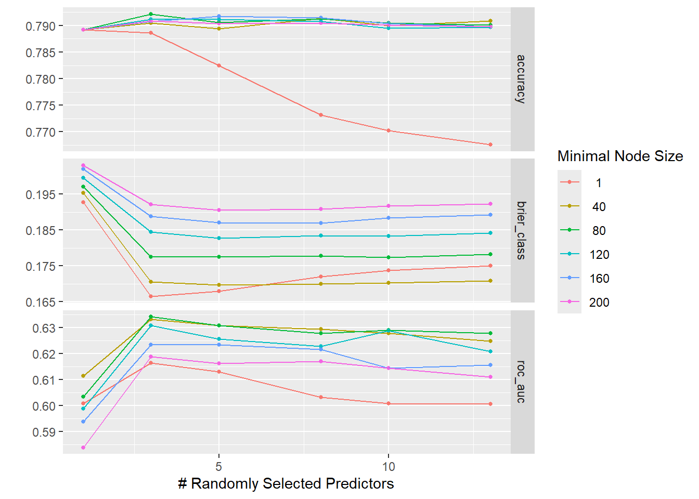
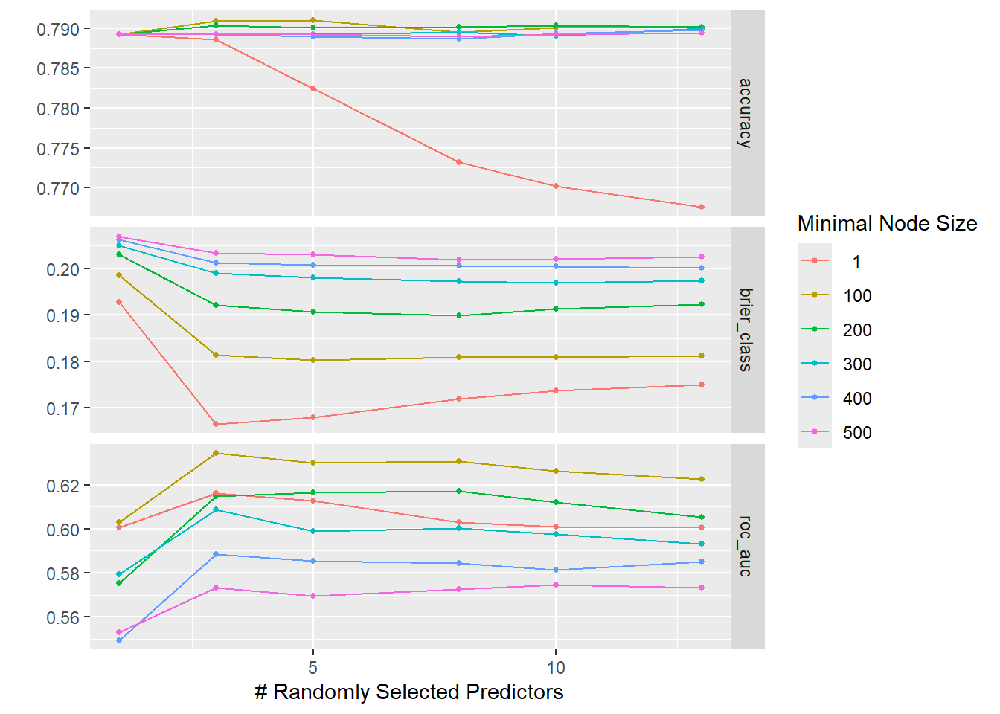
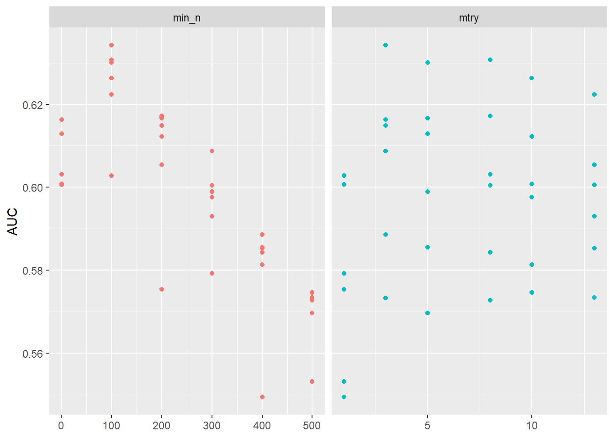

# Split data into training and testing datasetsset.seed(123) # seed for reproducibilitysplit_data <-initial_split(mydata, prop =0.8) # 80% split for training/testing datatrain_data <-training(split_data)test_data <-testing(split_data)
rf_rec <-recipe(P_UTDHPV ~ AGE + SEX + STATE + INS_STAT2_I + INCQ298A + INS_BREAK_I + INCPOV1 + RACEETHK + EDUC1 + LANGUAGE + MOBIL_1 + RENT_OWN + FACILITY, data = train_data) # use full model as recipe for the random forest modelrf_model <-rand_forest()%>%# use rand_forest() to make a random forest modelset_engine("randomForest", seed =123)%>%set_mode("classification")rf_workflow <-workflow() %>%# create workflow for rf modeladd_recipe(rf_rec)%>%# apply recipeadd_model(rf_model) # apply modelrf_fit <- rf_workflow%>%fit(data = train_data)%>%# use the workflow to fit the rf model to the dataprint(rf_fit)
══ Workflow [trained] ══════════════════════════════════════════════════════════
Preprocessor: Recipe
Model: rand_forest()
── Preprocessor ────────────────────────────────────────────────────────────────
0 Recipe Steps
── Model ───────────────────────────────────────────────────────────────────────
Call:
randomForest(x = maybe_data_frame(x), y = y, seed = ~123)
Type of random forest: classification
Number of trees: 500
No. of variables tried at each split: 3
OOB estimate of error rate: 21.03%
Confusion matrix:
NOT UTD UTD class.error
NOT UTD 88 2705 0.968492660
UTD 82 10376 0.007840887
Now, I will examine the performance of the base random forest model.
# Performance metrics of the first fitrf_aug <-augment(rf_fit, train_data) # augment to make predictions for rf_fitmetrics <-metric_set(accuracy, f_meas) # create a set of metrics to test for classificationfirst_fit_metrics <-metrics(truth = P_UTDHPV, estimate = .pred_class, data = rf_aug) # calculate metrics for first fitprint(first_fit_metrics)
The accuracy of the model is fairly high, meaning that there it performs fairly when classifying the predictors in the model. However, the F1 score is relatively low which reflects low precision and recall of the model. To improve this we will tune the model.
Now, I will continue by tuning the RF model using cross validation. I start with a smaller numer of trees and lower number of folds because my computer cannot computationally handle many trees or folds.
tune_spec <-rand_forest(mtry =tune(), # parameters of random forest model to tune are the mtry, trees, and min_ntrees =100,min_n =tune()) %>%set_engine("randomForest", seed =123) %>%# make sure to set seed again for the treeset_mode("classification")## I used ChatGPT to help me define the tree grid for the parameters mtry and min_ntree_grid <-grid_regular(mtry(range =c(1, 13)), min_n(range =c(1, 200)),levels =6)rf_tune_wf <-workflow() %>%# create workflowadd_recipe(rf_rec) %>%# add recipe from earlieradd_model(tune_spec) # add spec that is defined abovefolds_data <-vfold_cv(train_data, v=5 )# Set the number of cores to usenum_cores <-detectCores() -1# Initialize parallel backenddoParallel::registerDoParallel(cores = num_cores)set.seed(123) # set seed for reproducibilityrf_res <- rf_tune_wf %>%tune_grid(resamples = folds_data, # use data from the CV foldsgrid = tree_grid)rf_res %>%autoplot()

# Stop parallel processingstopImplicitCluster()
# Find the best values for the tuned metrics, mtry and min_n# find the ideal ROC_AUC metric for the rf treerf_res %>%collect_metrics() %>%# get metrics from the rf model createdfilter(.metric =="roc_auc") %>%# filter for the roc auc metricselect(mean, min_n, mtry) %>%# select the columsn for mean, min_n and mtrypivot_longer(min_n:mtry,values_to ="value",names_to ="parameter" ) %>%# Plot the ROC_AUC to find the ideal min_n and mtryggplot(aes(value, mean, color = parameter)) +geom_point(show.legend =FALSE) +facet_wrap(~parameter, scales ="free_x") +labs(x =NULL, y ="AUC")

It seems that mtry is maximized between 100 and 150 and min_n is maximized between 1 and 5. We can use a grid search to tune within a range to determine which is the ideal parameter value.
# grid search tuningrf_tune_grid <-grid_regular( #define a grid with a range for mtry and min_nmtry(range =c(100, 150)),min_n(range =c(1, 5)),levels =6)rf_tune_grid # display the grid
# Tune using the defined tuning griddoParallel::registerDoParallel(cores = num_cores)set.seed(123) # set seed for reproducibilityrf_res2 <- rf_tune_wf %>%tune_grid(resamples = folds_data, # use data from the CV foldsgrid = rf_tune_grid) # use new tune gridrf_res2 %>%autoplot()

# Stop parallel processingstopImplicitCluster()
From the plot, it seems that the ideal minimum node size (min_n) is 5 when the number of randomly selected predictors (mtry) is 140, when accuracy and ROC_AUC are both accounted for. We can check this using the select_best function.
# Specify the metric and optimization criteriabest_auc <-select_best(rf_res2, metric ="roc_auc")final_rf <-finalize_model( # select the best model based on roc_auc tune_spec, best_auc)# fit the tuned modelrf_rec <-recipe(P_UTDHPV ~ AGE + SEX + STATE + INS_STAT2_I + INCQ298A + INS_BREAK_I + INCPOV1 + RACEETHK + EDUC1 + LANGUAGE + MOBIL_1 + RENT_OWN + FACILITY, data = train_data) # use full model as recipe for the random forest modelrf_tune_workflow <-workflow() %>%# create workflow for rf modeladd_recipe(rf_rec)%>%# apply recipeadd_model(final_rf) # apply modelrf_tune_fit <- rf_tune_workflow%>%fit(data = train_data)%>%# use the workflow to fit the rf model to the dataprint(rf_fit)
Warning: 110 columns were requested but there were 13 predictors in the data.
13 will be used.
══ Workflow [trained] ══════════════════════════════════════════════════════════
Preprocessor: Recipe
Model: rand_forest()
── Preprocessor ────────────────────────────────────────────────────────────────
0 Recipe Steps
── Model ───────────────────────────────────────────────────────────────────────
Call:
randomForest(x = maybe_data_frame(x), y = y, ntree = ~100, mtry = min_cols(~110L, x), nodesize = min_rows(~5L, x), seed = ~123)
Type of random forest: classification
Number of trees: 100
No. of variables tried at each split: 13
OOB estimate of error rate: 22.98%
Confusion matrix:
NOT UTD UTD class.error
NOT UTD 289 2504 0.89652703
UTD 541 9917 0.05173073
The final random forest model was selected to optimize roc_auc, but it also has a fairly high accuracy. We can use
# make predictionsrf_tuned_aug <-augment(rf_tune_fit, train_data)# find metrics for tuned fittuned_fit_metrics <-metrics(truth = P_UTDHPV, estimate = .pred_class, data = rf_tuned_aug) # calculate metrics for first fitprint(tuned_fit_metrics)
The F1 measure has improved significantly, to 0.86 and the accuracy increased slightly, to 0.95.
Now I will compare the model will the a single predictor model and the original fit to verify that there is improvement in the predicitons made.
# RF model compared to single predictor model## Create a single modelrf_rec_null <-recipe(P_UTDHPV ~ SEX, data = train_data) # specify the model with a recipe; I could not get a null model to work so I used one predictor as a minimal model for comparisonrf_spec_null <-rand_forest() %>%set_engine("randomForest", importance =TRUE, seed =123) %>%# set the seed and specify that importance is trueset_mode("classification")rf_workflow_null <-workflow() %>%# create workflow with the recipe and specadd_recipe(rf_rec_null) %>%add_model(rf_spec_null)rf_fit_null <- rf_workflow_null %>%# fit the null modelfit(data = train_data)# Get predictions from single predictor modelrf_null_aug <-augment(rf_fit_null, train_data)
Note to future self: You cannot plot the models on coordinates because the predictions are classifications (not coninuous). Find another visual representation to compare the models.